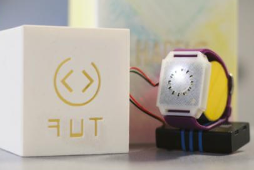
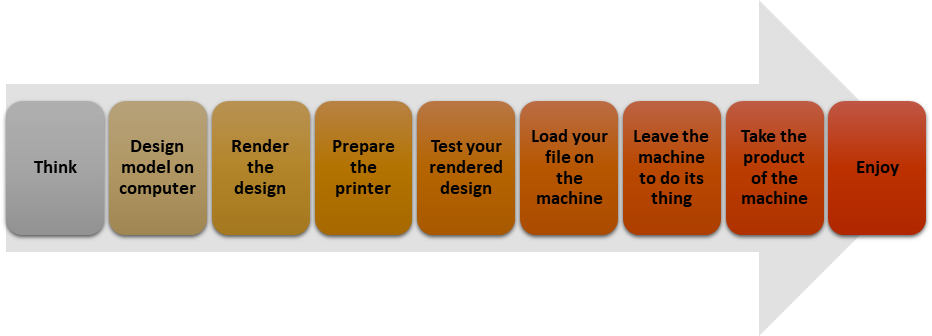

3D printing or additive manufacturing
My first introduction to 3D printing was few years back in Uni. I knew it back then when I first saw one industrial size metal 3D-printing machine, that I caught the bug!
Next thing you know, I am blowing all my savings to buy my own printer, the da Vinci Jr. Couple of days later it arrived and I immediately started printing whatever came in my mind. I must admit though, 3D printing is not a magic technology that can make everything.
The final product depends on the type of the machine, the material used, the printing area, (and so many more factors that I am not going to bore you with). So in my eagerness to create something with my newly-bougth machine, I ended up with a plastic blob after many hours of design and a lot of material used.
However, taking a step back and putting a lot of time and effort into learning what I can design, the capabilities of my machine, and a touch of imagination; I manged to develop my first working prototype for experimentation.

I mounted couple of hardware on the 3D-printed parts, and managed to create a "smart" watch as an aid for indoor navigation for people with impaired vision. The testing phase in lab was amazing, I got some awards for it; and none of that would have been possible if it wasn't my da Vinci Jr.
A road map to 3D printing
You can find here a very simplistic overview of the steps needed to make something with additive manufacturing. If my experience inspired you to get into 3D printing then you can find a lot of designs and models in this database
